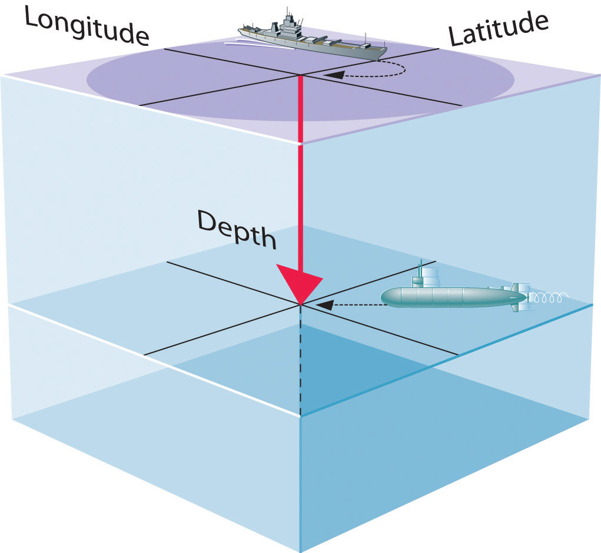
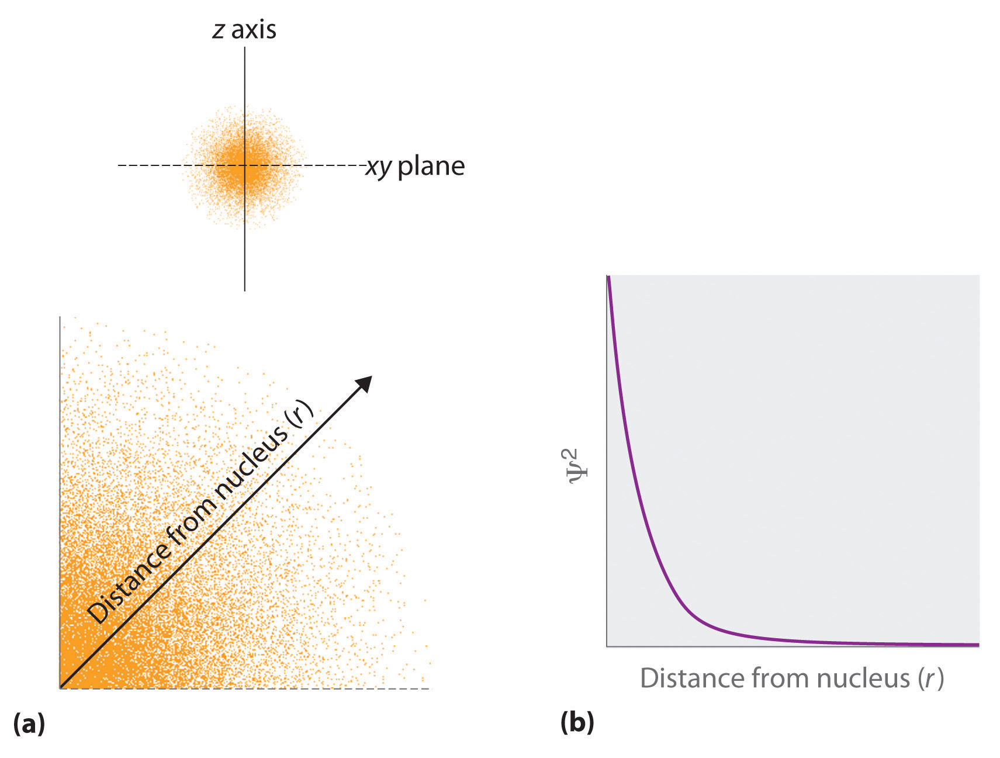
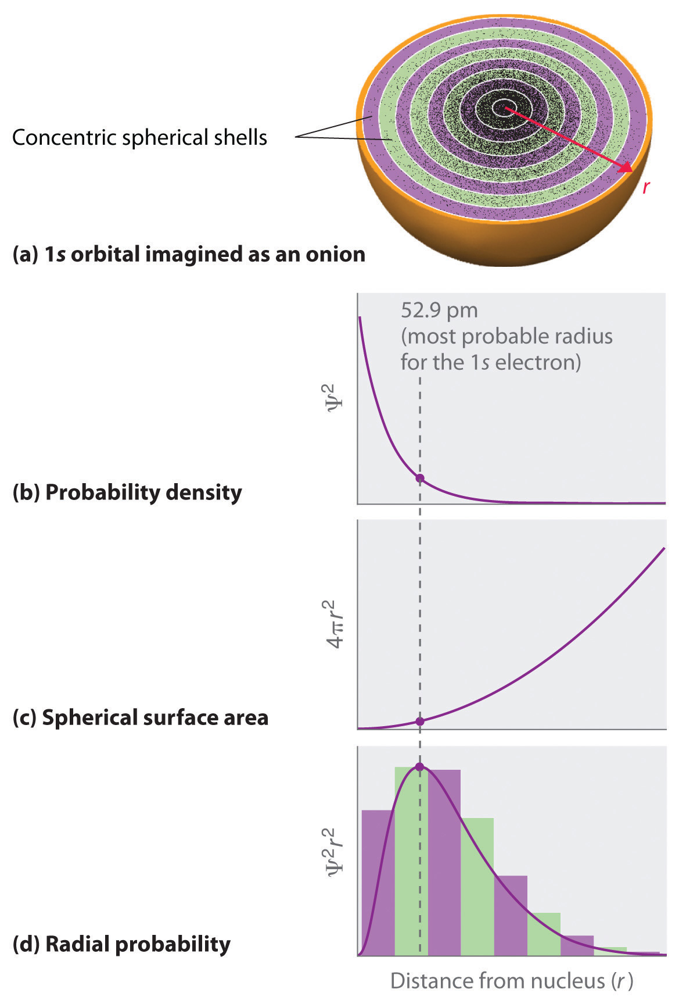
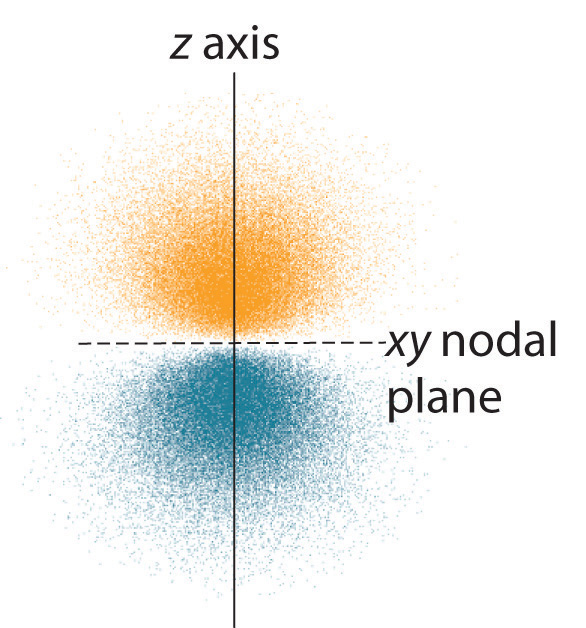
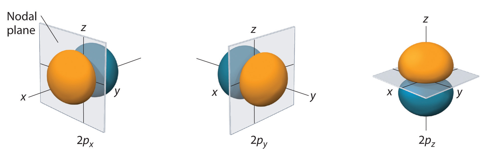
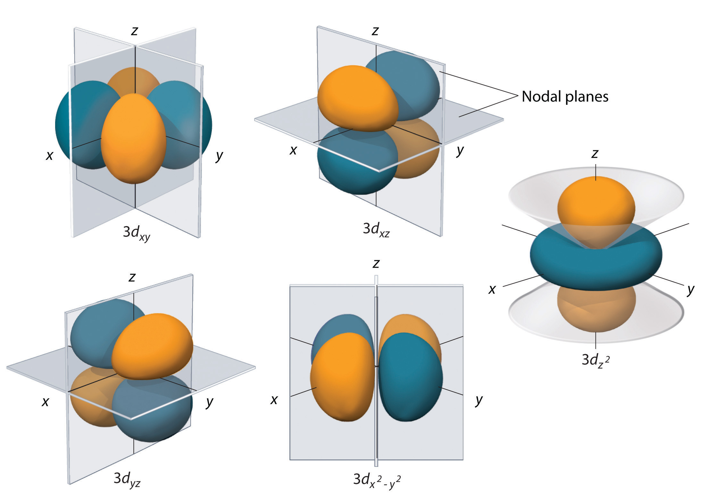
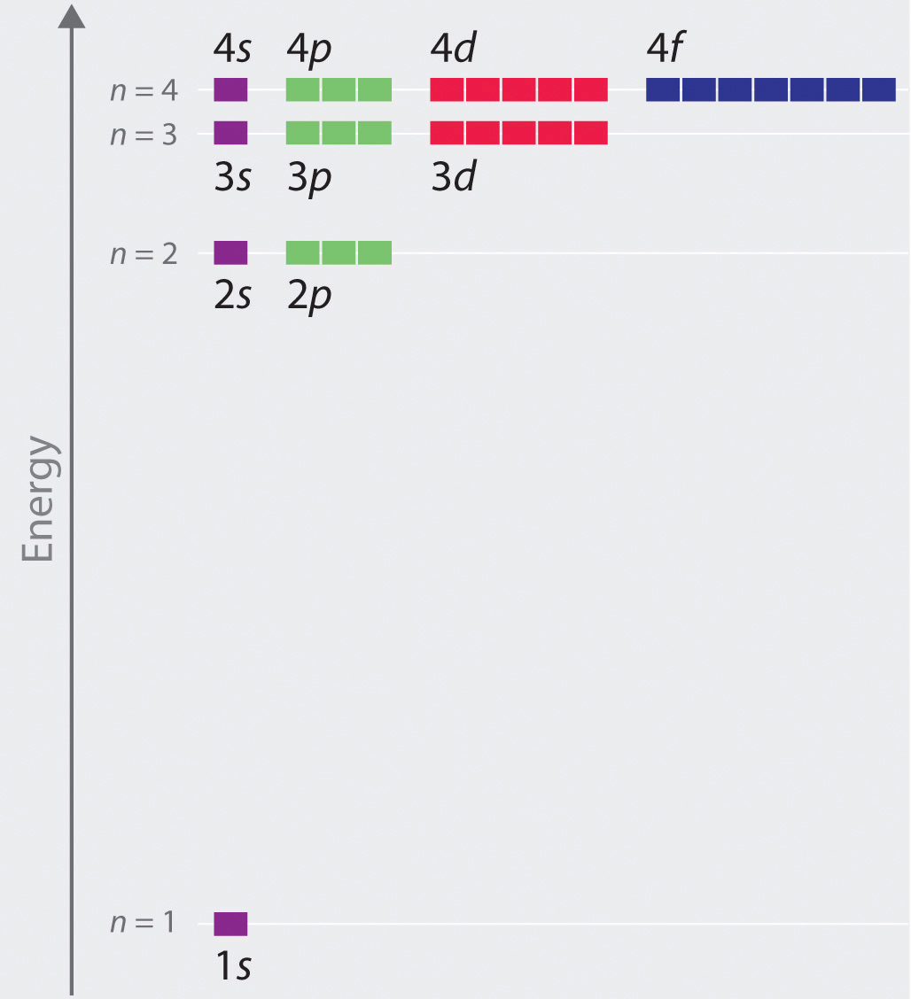
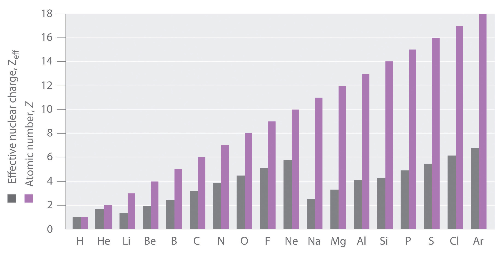
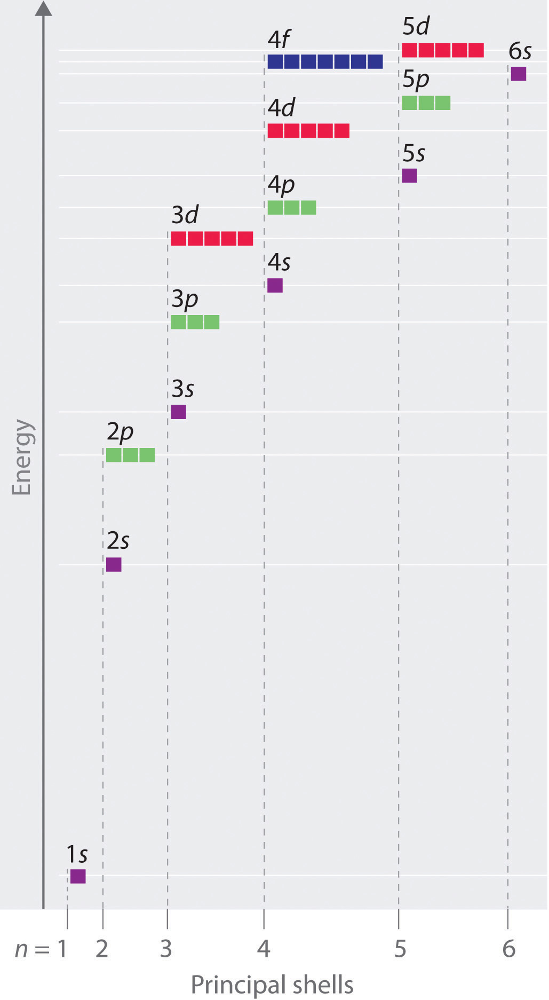

The paradox described by Heisenberg’s uncertainty principle and the wavelike nature of subatomic particles such as the electron made it impossible to use the equations of classical physics to describe the motion of electrons in atoms. Scientists needed a new approach that took the wave behavior of the electron into account. In 1926, an Austrian physicist, Erwin Schrödinger (1887–1961; Nobel Prize in Physics, 1933), developed wave mechanics, a mathematical technique that describes the relationship between the motion of a particle that exhibits wavelike properties (such as an electron) and its allowed energies. In doing so, Schrödinger developed the theory of quantum mechanicsA theory developed by Erwin Schrödinger that describes the energies and spatial distributions of electrons in atoms and molecules., which is used today to describe the energies and spatial distributions of electrons in atoms and molecules.
Schrödinger’s unconventional approach to atomic theory was typical of his unconventional approach to life. He was notorious for his intense dislike of memorizing data and learning from books. When Hitler came to power in Germany, Schrödinger escaped to Italy. He then worked at Princeton University in the United States but eventually moved to the Institute for Advanced Studies in Dublin, Ireland, where he remained until his retirement in 1955.
Although quantum mechanics uses sophisticated mathematics, you do not need to understand the mathematical details to follow our discussion of its general conclusions. We focus on the properties of the wave functions that are the solutions of Schrödinger’s equations.
A wave function (Ψ)A mathematical function that relates the location of an electron at a given point in space to the amplitude of its wave, which corresponds to its energy.Ψ is the uppercase Greek psi. is a mathematical function that relates the location of an electron at a given point in space (identified by x, y, and z coordinates) to the amplitude of its wave, which corresponds to its energy. Thus each wave function is associated with a particular energy E. The properties of wave functions derived from quantum mechanics are summarized here:
Figure 6.20 The Four Variables (Latitude, Longitude, Depth, and Time) Required to Precisely Locate an Object
If you are the captain of a ship trying to intercept an enemy submarine, you need to deliver your depth charge to the right location at the right time.
Figure 6.21 Probability of Finding the Electron in the Ground State of the Hydrogen Atom at Different Points in Space
(a) The density of the dots shows electron probability. (b) In this plot of Ψ2 versus r for the ground state of the hydrogen atom, the electron probability density is greatest at r = 0 (the nucleus) and falls off with increasing r. Because the line never actually reaches the horizontal axis, the probability of finding the electron at very large values of r is very small but not zero.
Schrödinger’s approach uses three quantum numbers (n, l, and ml) to specify any wave function. The quantum numbers provide information about the spatial distribution of an electron. Although n can be any positive integer, only certain values of l and ml are allowed for a given value of n.
The principal quantum number (n)One of three quantum numbers that tells the average relative distance of an electron from the nucleus. tells the average relative distance of an electron from the nucleus:
Equation 6.21
n = 1, 2, 3, 4,…As n increases for a given atom, so does the average distance of an electron from the nucleus. A negatively charged electron that is, on average, closer to the positively charged nucleus is attracted to the nucleus more strongly than an electron that is farther out in space. This means that electrons with higher values of n are easier to remove from an atom. All wave functions that have the same value of n are said to constitute a principal shellAll the wave functions that have the same value of because those electrons have similar average distances from the nucleus. because those electrons have similar average distances from the nucleus. As you will see, the principal quantum number n corresponds to the n used by Bohr to describe electron orbits and by Rydberg to describe atomic energy levels.
The second quantum number is often called the azimuthal quantum number (l)One of three quantum numbers that discribes the shape of the region of space occupied by an electron.. The value of l describes the shape of the region of space occupied by the electron. The allowed values of l depend on the value of n and can range from 0 to n − 1:
Equation 6.22
l = 0, 1, 2,…, n − 1For example, if n = 1, l can be only 0; if n = 2, l can be 0 or 1; and so forth. For a given atom, all wave functions that have the same values of both n and l form a subshellA group of wave functions that have the same values of and . The regions of space occupied by electrons in the same subshell usually have the same shape, but they are oriented differently in space.
The third quantum number is the magnetic quantum number (ml)One of three quantum numbers that describes the orientation of the region of space occupied by an electron with respect to an applied magnetic field.. The value of ml describes the orientation of the region in space occupied by an electron with respect to an applied magnetic field. The allowed values of ml depend on the value of l: ml can range from −l to l in integral steps:
Equation 6.23
ml = −l, −l + 1,…, 0,…, l − 1, lFor example, if l = 0, ml can be only 0; if l = 1, ml can be −1, 0, or +1; and if l = 2, ml can be −2, −1, 0, +1, or +2.
Each wave function with an allowed combination of n, l, and ml values describes an atomic orbitalA wave function with an allowed combination of , , and quantum numbers., a particular spatial distribution for an electron. For a given set of quantum numbers, each principal shell has a fixed number of subshells, and each subshell has a fixed number of orbitals.
How many subshells and orbitals are contained within the principal shell with n = 4?
Given: value of n
Asked for: number of subshells and orbitals in the principal shell
Strategy:
A Given n = 4, calculate the allowed values of l. From these allowed values, count the number of subshells.
B For each allowed value of l, calculate the allowed values of ml. The sum of the number of orbitals in each subshell is the number of orbitals in the principal shell.
Solution:
A We know that l can have all integral values from 0 to n − 1. If n = 4, then l can equal 0, 1, 2, or 3. Because the shell has four values of l, it has four subshells, each of which will contain a different number of orbitals, depending on the allowed values of ml.
B For l = 0, ml can be only 0, and thus the l = 0 subshell has only one orbital. For l = 1, ml can be 0 or ±1; thus the l = 1 subshell has three orbitals. For l = 2, ml can be 0, ±1, or ±2, so there are five orbitals in the l = 2 subshell. The last allowed value of l is l = 3, for which ml can be 0, ±1, ±2, or ±3, resulting in seven orbitals in the l = 3 subshell. The total number of orbitals in the n = 4 principal shell is the sum of the number of orbitals in each subshell and is equal to n2:
Exercise
How many subshells and orbitals are in the principal shell with n = 3?
Answer: three subshells; nine orbitals
Rather than specifying all the values of n and l every time we refer to a subshell or an orbital, chemists use an abbreviated system with lowercase letters to denote the value of l for a particular subshell or orbital:
| l = | 0 | 1 | 2 | 3 |
| Designation | s | p | d | f |
The principal quantum number is named first, followed by the letter s, p, d, or f as appropriate. These orbital designations are derived from corresponding spectroscopic characteristics: sharp, principle, diffuse, and fundamental. A 1s orbital has n = 1 and l = 0; a 2p subshell has n = 2 and l = 1 (and has three 2p orbitals, corresponding to ml = −1, 0, and +1); a 3d subshell has n = 3 and l = 2 (and has five 3d orbitals, corresponding to ml = −2, −1, 0, +1, and +2); and so forth.
We can summarize the relationships between the quantum numbers and the number of subshells and orbitals as follows (Table 6.3 "Values of "):
Each principal shell has n subshells, and each subshell has 2l + 1 orbitals.
Table 6.3 Values of n, l, and ml through n = 4
| n | l | Subshell Designation | ml | Number of Orbitals in Subshell | Number of Orbitals in Shell |
|---|---|---|---|---|---|
| 1 | 0 | 1s | 0 | 1 | 1 |
| 2 | 0 | 2s | 0 | 1 | 4 |
| 1 | 2p | −1, 0, 1 | 3 | ||
| 3 | 0 | 3s | 0 | 1 | 9 |
| 1 | 3p | −1, 0, 1 | 3 | ||
| 2 | 3d | −2, −1, 0, 1, 2 | 5 | ||
| 4 | 0 | 4s | 0 | 1 | 16 |
| 1 | 4p | −1, 0, 1 | 3 | ||
| 2 | 4d | −2, −1, 0, 1, 2 | 5 | ||
| 3 | 4f | −3, −2, −1, 0, 1, 2, 3 | 7 |
An orbital is the quantum mechanical refinement of Bohr’s orbit. In contrast to his concept of a simple circular orbit with a fixed radius, orbitals are mathematically derived regions of space with different probabilities of having an electron.
One way of representing electron probability distributions was illustrated in Figure 6.21 "Probability of Finding the Electron in the Ground State of the Hydrogen Atom at Different Points in Space" for the 1s orbital of hydrogen. Because Ψ2 gives the probability of finding an electron in a given volume of space (such as a cubic picometer), a plot of Ψ2 versus distance from the nucleus (r) is a plot of the probability density. The 1s orbital is spherically symmetrical, so the probability of finding a 1s electron at any given point depends only on its distance from the nucleus. The probability density is greatest at r = 0 (at the nucleus) and decreases steadily with increasing distance. At very large values of r, the electron probability density is very small but not zero.
In contrast, we can calculate the radial probability (the probability of finding a 1s electron at a distance r from the nucleus) by adding together the probabilities of an electron being at all points on a series of x spherical shells of radius r1, r2, r3,…, rx − 1, rx. In effect, we are dividing the atom into very thin concentric shells, much like the layers of an onion (part (a) in Figure 6.22 "Most Probable Radius for the Electron in the Ground State of the Hydrogen Atom"), and calculating the probability of finding an electron on each spherical shell. Recall that the electron probability density is greatest at r = 0 (part (b) in Figure 6.22 "Most Probable Radius for the Electron in the Ground State of the Hydrogen Atom"), so the density of dots is greatest for the smallest spherical shells in part (a) in Figure 6.22 "Most Probable Radius for the Electron in the Ground State of the Hydrogen Atom". In contrast, the surface area of each spherical shell is equal to 4πr2, which increases very rapidly with increasing r (part (c) in Figure 6.22 "Most Probable Radius for the Electron in the Ground State of the Hydrogen Atom"). Because the surface area of the spherical shells increases more rapidly with increasing r than the electron probability density decreases, the plot of radial probability has a maximum at a particular distance (part (d) in Figure 6.22 "Most Probable Radius for the Electron in the Ground State of the Hydrogen Atom"). Most important, when r is very small, the surface area of a spherical shell is so small that the total probability of finding an electron close to the nucleus is very low; at the nucleus, the electron probability vanishes (part (d) in Figure 6.22 "Most Probable Radius for the Electron in the Ground State of the Hydrogen Atom").
Figure 6.22 Most Probable Radius for the Electron in the Ground State of the Hydrogen Atom
(a) Imagine dividing the atom’s total volume into very thin concentric shells as shown in the onion drawing. (b) A plot of electron probability density Ψ2 versus r shows that the electron probability density is greatest at r = 0 and falls off smoothly with increasing r. The density of the dots is therefore greatest in the innermost shells of the onion. (c) The surface area of each shell, given by 4πr2, increases rapidly with increasing r. (d) If we count the number of dots in each spherical shell, we obtain the total probability of finding the electron at a given value of r. Because the surface area of each shell increases more rapidly with increasing r than the electron probability density decreases, a plot of electron probability versus r (the radial probability) shows a peak. This peak corresponds to the most probable radius for the electron, 52.9 pm, which is exactly the radius predicted by Bohr’s model of the hydrogen atom.
For the hydrogen atom, the peak in the radial probability plot occurs at r = 0.529 Å (52.9 pm), which is exactly the radius calculated by Bohr for the n = 1 orbit. Thus the most probable radius obtained from quantum mechanics is identical to the radius calculated by classical mechanics. In Bohr’s model, however, the electron was assumed to be at this distance 100% of the time, whereas in the Schrödinger model, it is at this distance only some of the time. The difference between the two models is attributable to the wavelike behavior of the electron and the Heisenberg uncertainty principle.
Figure 6.23 "Probability Densities for the 1" compares the electron probability densities for the hydrogen 1s, 2s, and 3s orbitals. Note that all three are spherically symmetrical. For the 2s and 3s orbitals, however (and for all other s orbitals as well), the electron probability density does not fall off smoothly with increasing r. Instead, a series of minima and maxima are observed in the radial probability plots (part (c) in Figure 6.23 "Probability Densities for the 1"). The minima correspond to spherical nodes (regions of zero electron probability), which alternate with spherical regions of nonzero electron probability.
Figure 6.23 Probability Densities for the 1s, 2s, and 3s Orbitals of the Hydrogen Atom

(a) The electron probability density in any plane that contains the nucleus is shown. Note the presence of circular regions, or nodes, where the probability density is zero. (b) Contour surfaces enclose 90% of the electron probability, which illustrates the different sizes of the 1s, 2s, and 3s orbitals. The cutaway drawings give partial views of the internal spherical nodes. The orange color corresponds to regions of space where the phase of the wave function is positive, and the blue color corresponds to regions of space where the phase of the wave function is negative. (c) In these plots of electron probability as a function of distance from the nucleus (r) in all directions (radial probability), the most probable radius increases as n increases, but the 2s and 3s orbitals have regions of significant electron probability at small values of r.
Three things happen to s orbitals as n increases (Figure 6.23 "Probability Densities for the 1"):
Orbitals are generally drawn as three-dimensional surfaces that enclose 90% of the electron densityElectron distributions that are represented as standing waves., as was shown for the hydrogen 1s, 2s, and 3s orbitals in part (b) in Figure 6.23 "Probability Densities for the 1". Although such drawings show the relative sizes of the orbitals, they do not normally show the spherical nodes in the 2s and 3s orbitals because the spherical nodes lie inside the 90% surface. Fortunately, the positions of the spherical nodes are not important for chemical bonding.
Only s orbitals are spherically symmetrical. As the value of l increases, the number of orbitals in a given subshell increases, and the shapes of the orbitals become more complex. Because the 2p subshell has l = 1, with three values of ml (−1, 0, and +1), there are three 2p orbitals.
Figure 6.24 Electron Probability Distribution for a Hydrogen 2p Orbital
The nodal plane of zero electron density separates the two lobes of the 2p orbital. As in Figure 6.23 "Probability Densities for the 1", the colors correspond to regions of space where the phase of the wave function is positive (orange) and negative (blue).
The electron probability distribution for one of the hydrogen 2p orbitals is shown in Figure 6.24 "Electron Probability Distribution for a Hydrogen 2". Because this orbital has two lobes of electron density arranged along the z axis, with an electron density of zero in the xy plane (i.e., the xy plane is a nodal plane), it is a 2pz orbital. As shown in Figure 6.25 "The Three Equivalent 2", the other two 2p orbitals have identical shapes, but they lie along the x axis (2px) and y axis (2py), respectively. Note that each p orbital has just one nodal plane. In each case, the phase of the wave function for each of the 2p orbitals is positive for the lobe that points along the positive axis and negative for the lobe that points along the negative axis. It is important to emphasize that these signs correspond to the phase of the wave that describes the electron motion, not to positive or negative charges.
Figure 6.25 The Three Equivalent 2p Orbitals of the Hydrogen Atom
The surfaces shown enclose 90% of the total electron probability for the 2px, 2py, and 2pz orbitals. Each orbital is oriented along the axis indicated by the subscript and a nodal plane that is perpendicular to that axis bisects each 2p orbital. The phase of the wave function is positive (orange) in the region of space where x, y, or z is positive and negative (blue) where x, y, or z is negative.
Just as with the s orbitals, the size and complexity of the p orbitals for any atom increase as the principal quantum number n increases. The shapes of the 90% probability surfaces of the 3p, 4p, and higher-energy p orbitals are, however, essentially the same as those shown in Figure 6.25 "The Three Equivalent 2".
Subshells with l = 2 have five d orbitals; the first principal shell to have a d subshell corresponds to n = 3. The five d orbitals have ml values of −2, −1, 0, +1, and +2.
Figure 6.26 The Five Equivalent 3d Orbitals of the Hydrogen Atom
The surfaces shown enclose 90% of the total electron probability for the five hydrogen 3d orbitals. Four of the five 3d orbitals consist of four lobes arranged in a plane that is intersected by two perpendicular nodal planes. These four orbitals have the same shape but different orientations. The fifth 3d orbital, , has a distinct shape even though it is mathematically equivalent to the others. The phase of the wave function for the different lobes is indicated by color: orange for positive and blue for negative.
The hydrogen 3d orbitals, shown in Figure 6.26 "The Five Equivalent 3", have more complex shapes than the 2p orbitals. All five 3d orbitals contain two nodal surfaces, as compared to one for each p orbital and zero for each s orbital. In three of the d orbitals, the lobes of electron density are oriented between the x and y, x and z, and y and z planes; these orbitals are referred to as the 3dxy, 3dxz, and 3dyz orbitals, respectively. A fourth d orbital has lobes lying along the x and y axes; this is the orbital. The fifth 3d orbital, called the orbital, has a unique shape: it looks like a 2pz orbital combined with an additional doughnut of electron probability lying in the xy plane. Despite its peculiar shape, the orbital is mathematically equivalent to the other four and has the same energy. In contrast to p orbitals, the phase of the wave function for d orbitals is the same for opposite pairs of lobes. As shown in Figure 6.26 "The Five Equivalent 3", the phase of the wave function is positive for the two lobes of the orbital that lie along the z axis, whereas the phase of the wave function is negative for the doughnut of electron density in the xy plane. Like the s and p orbitals, as n increases, the size of the d orbitals increases, but the overall shapes remain similar to those depicted in Figure 6.26 "The Five Equivalent 3".
Principal shells with n = 4 can have subshells with l = 3 and ml values of −3, −2, −1, 0, +1, +2, and +3. These subshells consist of seven f orbitals. Each f orbital has three nodal surfaces, so their shapes are complex. Because f orbitals are not particularly important for our purposes, we do not discuss them further, and orbitals with higher values of l are not discussed at all.
Although we have discussed the shapes of orbitals, we have said little about their comparative energies. We begin our discussion of orbital energiesA particular energy associated with a given set of quantum numbers. by considering atoms or ions with only a single electron (such as H or He+).
The relative energies of the atomic orbitals with n ≤ 4 for a hydrogen atom are plotted in Figure 6.27 "Orbital Energy Level Diagram for the Hydrogen Atom"; note that the orbital energies depend on only the principal quantum number n. Consequently, the energies of the 2s and 2p orbitals of hydrogen are the same; the energies of the 3s, 3p, and 3d orbitals are the same; and so forth. The orbital energies obtained for hydrogen using quantum mechanics are exactly the same as the allowed energies calculated by Bohr. In contrast to Bohr’s model, however, which allowed only one orbit for each energy level, quantum mechanics predicts that there are 4 orbitals with different electron density distributions in the n = 2 principal shell (one 2s and three 2p orbitals), 9 in the n = 3 principal shell, and 16 in the n = 4 principal shell.The different values of l and ml for the individual orbitals within a given principal shell are not important for understanding the emission or absorption spectra of the hydrogen atom under most conditions, but they do explain the splittings of the main lines that are observed when hydrogen atoms are placed in a magnetic field. As we have just seen, however, quantum mechanics also predicts that in the hydrogen atom, all orbitals with the same value of n (e.g., the three 2p orbitals) are degenerateHaving the same energy., meaning that they have the same energy. Figure 6.27 "Orbital Energy Level Diagram for the Hydrogen Atom" shows that the energy levels become closer and closer together as the value of n increases, as expected because of the 1/n2 dependence of orbital energies.
Figure 6.27 Orbital Energy Level Diagram for the Hydrogen Atom
Each box corresponds to one orbital. Note that the difference in energy between orbitals decreases rapidly with increasing values of n.
The energies of the orbitals in any species with only one electron can be calculated by a minor variation of Bohr’s equation (Equation 6.9), which can be extended to other single-electron species by incorporating the nuclear charge Z (the number of protons in the nucleus):
Equation 6.24
In general, both energy and radius decrease as the nuclear charge increases. Thus the most stable orbitals (those with the lowest energy) are those closest to the nucleus. For example, in the ground state of the hydrogen atom, the single electron is in the 1s orbital, whereas in the first excited state, the atom has absorbed energy and the electron has been promoted to one of the n = 2 orbitals. In ions with only a single electron, the energy of a given orbital depends on only n, and all subshells within a principal shell, such as the px, py, and pz orbitals, are degenerate.
For an atom or an ion with only a single electron, we can calculate the potential energy by considering only the electrostatic attraction between the positively charged nucleus and the negatively charged electron. When more than one electron is present, however, the total energy of the atom or the ion depends not only on attractive electron-nucleus interactions but also on repulsive electron-electron interactions. When there are two electrons, the repulsive interactions depend on the positions of both electrons at a given instant, but because we cannot specify the exact positions of the electrons, it is impossible to exactly calculate the repulsive interactions. Consequently, we must use approximate methods to deal with the effect of electron-electron repulsions on orbital energies.
If an electron is far from the nucleus (i.e., if the distance r between the nucleus and the electron is large), then at any given moment, most of the other electrons will be between that electron and the nucleus. Hence the electrons will cancel a portion of the positive charge of the nucleus and thereby decrease the attractive interaction between it and the electron farther away. As a result, the electron farther away experiences an effective nuclear charge (Zeff)The nuclear charge an electron actually experiences because of shielding from other electrons closer to the nucleus. that is less than the actual nuclear charge Z. This effect is called electron shieldingThe effect by which electrons closer to the nucleus neutralize a portion of the positive charge of the nucleus and thereby decrease the attractive interaction between the nucleus and an electron father away.. As the distance between an electron and the nucleus approaches infinity, Zeff approaches a value of 1 because all the other (Z − 1) electrons in the neutral atom are, on the average, between it and the nucleus. If, on the other hand, an electron is very close to the nucleus, then at any given moment most of the other electrons are farther from the nucleus and do not shield the nuclear charge. At r ≈ 0, the positive charge experienced by an electron is approximately the full nuclear charge, or Zeff ≈ Z. At intermediate values of r, the effective nuclear charge is somewhere between 1 and Z: 1 ≤ Zeff ≤ Z. Thus the actual Zeff experienced by an electron in a given orbital depends not only on the spatial distribution of the electron in that orbital but also on the distribution of all the other electrons present. This leads to large differences in Zeff for different elements, as shown in Figure 6.28 "Relationship between the Effective Nuclear Charge " for the elements of the first three rows of the periodic table. Notice that only for hydrogen does Zeff = Z, and only for helium are Zeff and Z comparable in magnitude.
Figure 6.28 Relationship between the Effective Nuclear Charge Zeff and the Atomic Number Z for the Outer Electrons of the Elements of the First Three Rows of the Periodic Table
Except for hydrogen, Zeff is always less than Z, and Zeff increases from left to right as you go across a row.
The energies of the different orbitals for a typical multielectron atom are shown in Figure 6.29 "Orbital Energy Level Diagram for a Typical Multielectron Atom". Within a given principal shell of a multielectron atom, the orbital energies increase with increasing l. An ns orbital always lies below the corresponding np orbital, which in turn lies below the nd orbital. These energy differences are caused by the effects of shielding and penetration, the extent to which a given orbital lies inside other filled orbitals. As shown in Figure 6.30 "Orbital Penetration", for example, an electron in the 2s orbital penetrates inside a filled 1s orbital more than an electron in a 2p orbital does. Hence in an atom with a filled 1s orbital, the Zeff experienced by a 2s electron is greater than the Zeff experienced by a 2p electron. Consequently, the 2s electron is more tightly bound to the nucleus and has a lower energy, consistent with the order of energies shown in Figure 6.29 "Orbital Energy Level Diagram for a Typical Multielectron Atom".
Due to electron shielding, Zeff increases more rapidly going across a row of the periodic table than going down a column.
Figure 6.29 Orbital Energy Level Diagram for a Typical Multielectron Atom
Because of the effects of shielding and the different radial distributions of orbitals with the same value of n but different values of l, the different subshells are not degenerate in a multielectron atom. (Compare this with Figure 6.27 "Orbital Energy Level Diagram for the Hydrogen Atom".) For a given value of n, the ns orbital is always lower in energy than the np orbitals, which are lower in energy than the nd orbitals, and so forth. As a result, some subshells with higher principal quantum numbers are actually lower in energy than subshells with a lower value of n; for example, the 4s orbital is lower in energy than the 3d orbitals for most atoms.
Figure 6.30 Orbital Penetration

A comparison of the radial probability distribution of the 2s and 2p orbitals for various states of the hydrogen atom shows that the 2s orbital penetrates inside the 1s orbital more than the 2p orbital does. Consequently, when an electron is in the small inner lobe of the 2s orbital, it experiences a relatively large value of Zeff, which causes the energy of the 2s orbital to be lower than the energy of the 2p orbital.
Notice in Figure 6.29 "Orbital Energy Level Diagram for a Typical Multielectron Atom" that the difference in energies between subshells can be so large that the energies of orbitals from different principal shells can become approximately equal. For example, the energy of the 3d orbitals in most atoms is actually between the energies of the 4s and the 4p orbitals.
Because of wave–particle duality, scientists must deal with the probability of an electron being at a particular point in space. To do so required the development of quantum mechanics, which uses wave functions (Ψ) to describe the mathematical relationship between the motion of electrons in atoms and molecules and their energies. Wave functions have five important properties: (1) the wave function uses three variables (Cartesian axes x, y, and z) to describe the position of an electron; (2) the magnitude of the wave function is proportional to the intensity of the wave; (3) the probability of finding an electron at a given point is proportional to the square of the wave function at that point, leading to a distribution of probabilities in space that is often portrayed as an electron density plot; (4) describing electron distributions as standing waves leads naturally to the existence of sets of quantum numbers characteristic of each wave function; and (5) each spatial distribution of the electron described by a wave function with a given set of quantum numbers has a particular energy.
Quantum numbers provide important information about the energy and spatial distribution of an electron. The principal quantum number n can be any positive integer; as n increases for an atom, the average distance of the electron from the nucleus also increases. All wave functions with the same value of n constitute a principal shell in which the electrons have similar average distances from the nucleus. The azimuthal quantum number l can have integral values between 0 and n − 1; it describes the shape of the electron distribution. Wave functions that have the same values of both n and l constitute a subshell, corresponding to electron distributions that usually differ in orientation rather than in shape or average distance from the nucleus. The magnetic quantum number ml can have 2l + 1 integral values, ranging from −l to +l, and describes the orientation of the electron distribution. Each wave function with a given set of values of n, l, and ml describes a particular spatial distribution of an electron in an atom, an atomic orbital.
The four chemically important types of atomic orbital correspond to values of l = 0, 1, 2, and 3. Orbitals with l = 0 are s orbitals and are spherically symmetrical, with the greatest probability of finding the electron occurring at the nucleus. All orbitals with values of n > 1 and l = 0 contain one or more nodes. Orbitals with l = 1 are p orbitals and contain a nodal plane that includes the nucleus, giving rise to a dumbbell shape. Orbitals with l = 2 are d orbitals and have more complex shapes with at least two nodal surfaces. Orbitals with l = 3 are f orbitals, which are still more complex.
Because its average distance from the nucleus determines the energy of an electron, each atomic orbital with a given set of quantum numbers has a particular energy associated with it, the orbital energy. In atoms or ions with only a single electron, all orbitals with the same value of n have the same energy (they are degenerate), and the energies of the principal shells increase smoothly as n increases. An atom or ion with the electron(s) in the lowest-energy orbital(s) is said to be in its ground state, whereas an atom or ion in which one or more electrons occupy higher-energy orbitals is said to be in an excited state. The calculation of orbital energies in atoms or ions with more than one electron (multielectron atoms or ions) is complicated by repulsive interactions between the electrons. The concept of electron shielding, in which intervening electrons act to reduce the positive nuclear charge experienced by an electron, allows the use of hydrogen-like orbitals and an effective nuclear charge (Zeff) to describe electron distributions in more complex atoms or ions. The degree to which orbitals with different values of l and the same value of n overlap or penetrate filled inner shells results in slightly different energies for different subshells in the same principal shell in most atoms.
Why does an electron in an orbital with n = 1 in a hydrogen atom have a lower energy than a free electron (n = ∞)?
What four variables are required to fully describe the position of any object in space? In quantum mechanics, one of these variables is not explicitly considered. Which one and why?
Chemists generally refer to the square of the wave function rather than to the wave function itself. Why?
Orbital energies of species with only one electron are defined by only one quantum number. Which one? In such a species, is the energy of an orbital with n = 2 greater than, less than, or equal to the energy of an orbital with n = 4? Justify your answer.
In each pair of subshells for a hydrogen atom, which has the higher energy? Give the principal and the azimuthal quantum number for each pair.
What is the relationship between the energy of an orbital and its average radius? If an electron made a transition from an orbital with an average radius of 846.4 pm to an orbital with an average radius of 476.1 pm, would an emission spectrum or an absorption spectrum be produced? Why?
In making a transition from an orbital with a principal quantum number of 4 to an orbital with a principal quantum number of 7, does the electron of a hydrogen atom emit or absorb a photon of energy? What would be the energy of the photon? To what region of the electromagnetic spectrum does this energy correspond?
What quantum number defines each of the following?
In an attempt to explain the properties of the elements, Niels Bohr initially proposed electronic structures for several elements with orbits holding a certain number of electrons, some of which are in the following table:
| Element | Number of Electrons | Electrons in orbits with n = | |||
|---|---|---|---|---|---|
| 4 | 3 | 2 | 1 | ||
| H | 1 | 1 | |||
| He | 2 | 2 | |||
| Ne | 10 | 8 | 2 | ||
| Ar | 18 | 8 | 8 | 2 | |
| Li | 3 | 1 | 2 | ||
| Na | 11 | 1 | 8 | 2 | |
| K | 19 | 1 | 8 | 8 | 2 |
| Be | 4 | 2 | 2 | ||
What happens to the energy of a given orbital as the nuclear charge Z of a species increases? In a multielectron atom and for a given nuclear charge, the Zeff experienced by an electron depends on its value of l. Why?
The electron density of a particular atom is divided into two general regions. Name these two regions and describe what each represents.
As the principal quantum number increases, the energy difference between successive energy levels decreases. Why? What would happen to the electron configurations of the transition metals if this decrease did not occur?
Describe the relationship between electron shielding and Zeff on the outermost electrons of an atom. Predict how chemical reactivity is affected by a decreased effective nuclear charge.
If a given atom or ion has a single electron in each of the following subshells, which electron is easier to remove?
How many subshells are possible for n = 3? What are they?
How many subshells are possible for n = 5? What are they?
What value of l corresponds to a d subshell? How many orbitals are in this subshell?
What value of l corresponds to an f subshell? How many orbitals are in this subshell?
State the number of orbitals and electrons that can occupy each subshell.
State the number of orbitals and electrons that can occupy each subshell.
How many orbitals and subshells are found within the principal shell n = 6? How do these orbital energies compare with those for n = 4?
How many nodes would you expect a 4p orbital to have? A 5s orbital?
A p orbital is found to have one node in addition to the nodal plane that bisects the lobes. What would you predict to be the value of n? If an s orbital has two nodes, what is the value of n?
Three subshells, with l = 0 (s), l = 1 (p), and l = 2 (d).
A d subshell has l = 2 and contains 5 orbitals.
A principal shell with n = 6 contains six subshells, with l = 0, 1, 2, 3, 4, and 5, respectively. These subshells contain 1, 3, 5, 7, 9, and 11 orbitals, respectively, for a total of 36 orbitals. The energies of the orbitals with n = 6 are higher than those of the corresponding orbitals with the same value of l for n = 4.